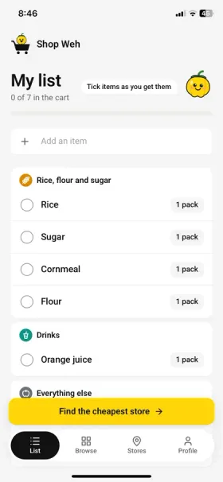

Shop Weh
Add your grocery list and Shop Weh ranks Jamaican stores by how much of the list they carry and what it costs, then shows the cheapest store and how much you save compared with the average. Installable as a PWA.
- Real grocery prices from stores across Jamaica
- Scrapers for Consumer Affairs Commission survey PDFs, WooCommerce and Shopify feeds that obey robots.txt
- Daily price refresh through a GitHub Actions pipeline, published to Firestore
- User accounts, price checks and reports
